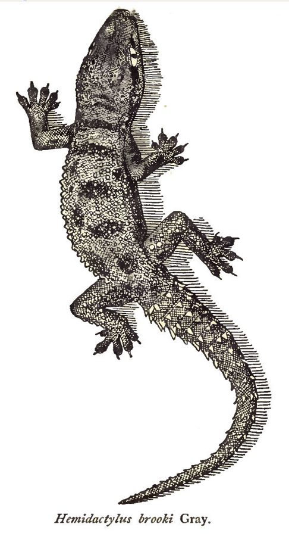

ब्रुक्स हाउस गेकोBrooke's House Gecko
Hemidactylus brookii · Gekkonidae · REP-0031

- Scientific name वैज्ञानिक नाम
- Hemidactylus brookii Gray, 1845
- Family कुल
- Gekkonidae
- Hindi हिंदी
- ब्रुक्स हाउस गेको
- Local names स्थानीय नाम
- brookes house gecko, gecko
- Status here यहाँ की स्थिति
- native
- Movement आवागमन
- Resident, here all year
- Known from कहाँ दर्ज
- Others have published records from the wider Awadh–Purvanchal plain, none yet from Basti–Ayodhya अवध–पूर्वांचल से दूसरों के प्रकाशित अभिलेख, बस्ती–अयोध्या से अभी नहीं
- IUCN IUCN
- LC
- Review समीक्षा
- audited and independently read
When to look कब देखें
Present all year. साल भर मौजूद।
Uses and possibilities उपयोग और संभावनाएँ
Drawn from the documented uses in the profile below, where each is labelled traditional, current or a research lead. All uses →
Tell it apart from इनसे अलग पहचानें
ब्रुक्स हाउस गेको / Brooke's House Gecko
Hemidactylus brookii Gray, 1845 — Gekkonidae
ब्रुक्स हाउस गेको — देशी छिपकली जो पेड़ों की खुरदरी छाल पर रहती है। त्वचा खुरदरी, बार-बार की गई नियमित पंक्तियों में बड़ी सूक्ष्म टहनियों जैसी। पीले-भूरे रंग की, रात को पेड़ों पर कीड़ों का शिकार करती है। घर की चिकनी छिपकली से अलग; ज़्यादा बाहर रहने वाली।
Quick Identification त्वरित पहचान
| Feature | Description |
|---|---|
| Form | Small to medium; moderately flattened; granular skin with prominent texture |
| Coloration | Brownish, greyish-brown, or tan; may have darker spots or bands |
| Skin texture | Very rough, bark-like with prominent keeled scales and tubercles in regular rows |
| Feet | Expanded digital pads; well-developed lamellae |
| Tail | Tapers gradually; regenerable; generally kept at body level |
| Eyes | Moderately large; vertical pupils |
Field tip: Distinguished from the smooth-skinned house gecko by its rough, bark-like texture and preference for outdoor rocks and tree trunks. Listen for calls at night on trees. More cautious than house geckos; rarely enters buildings. The rough texture is diagnostic.
Morphology आकारिकी
Biometrics (northern India):
| Measurement | Range |
|---|---|
| Snout-vent length (SVL) | 45–60 mm |
| Tail length | 50–70 mm |
| Weight | 3–6 g |
Body: Small to medium, laterally flattened. The most distinctive feature is the highly textured skin with prominent, keeled scales arranged in regular longitudinal rows, giving a bark-like appearance.
Skin texture: Dorsal surface covered with small keeled granules and tubercles arranged in neat transverse rows. These tubercles are more prominent than in smooth-skinned geckos, creating the characteristic roughness.
Feet: Digital pads expanded underneath, covered with fine lamellae (setae). Well-developed, suitable for climbing rough bark.
Tail: Slender, tapering, regenerable; approximately same length as snout-vent length.
Coloration: Greyish-brown, tan, or pale brown, often matching tree bark. May display darker spots, bands, or reticulations. Often shows longitudinal stripes. The pattern camouflages the gecko on bark.
Eyes: Moderately large, with vertical elliptical pupils. Lacks movable eyelids.
Behaviour & Ecology व्यवहार और पारिस्थितिकता
Nocturnal insectivore. Climbs tree trunks and rough stone walls to hunt night-flying insects. Less attracted to artificial lights than smooth-skinned house geckos. More solitary and less vocal than house geckos. Forages systematically up tree trunks and branches. Uses camouflage (bark-like coloration) to avoid predators while stationary. Males are territorial but vocalizations are quieter than house geckos.
Life Cycle / Phenology जीवन चक्र
- Active season: Active from March to November. During winter months (December–February), becomes inactive in protected crevices in bark, rock crevices, or wall cavities.
- Mating: Occurs in spring (April–May). Males produce low calls to attract females; more silent than house gecko males.
- Egg-laying: Females lay eggs in protected bark crevices or under loose bark. Two eggs per clutch, typically.
- Hatching: Eggs hatch in 40–50 days. Hatchlings are tiny, fully independent.
- Sexual maturity: Reached in 6–8 months.
Host Plants or Prey आहार
Nocturnal prey:
- Moths and butterflies
- Small beetles and insects
- Small spiders and arthropods
- Winged termites during emergence
- Small crickets and grasshoppers
Predators / Natural Enemies शत्रु
- Snakes: Common Cat Snake and rat snakes hunt them on tree trunks
- Spiders: Large spiders prey on young geckos
- Birds: Owls hunt nocturnal geckos; day-active birds catch them if exposed
- Cats: Feral cats may catch them if on accessible surfaces
Agricultural / Human Relevance कृषि प्रासंगिकता
Pest control. By hunting nocturnal insects on tree trunks, these geckos help control pest populations in orchards and gardens. Particularly valuable in fruit tree management.
Protection status. Protected under the Wildlife (Protection) Act 1972.
Cultural significance. Less prominent in folklore than house geckos due to outdoor, secretive nature.
Expected Locally स्थानीय रूप से अपेक्षित
Not a field record. Written from published accounts for eastern Uttar Pradesh. No confirmed local sighting yet — if you have seen it, that is what the atlas needs.
अभी तक स्थानीय पुष्टि नहीं। यह विवरण प्रकाशित स्रोतों से है, किसी अवलोकन से नहीं।
Expected on tree trunks, stone walls, and rocky outcrops throughout Basti district. Most active at dusk and night; look by torchlight on rough-barked trees (mangoes, neem) and stone walls. Less obvious than house geckos; requires deliberate searching. A photograph or torchlight observation with place, date, and tree type is a confirmed record.
Distribution वितरण
Global range: Native to tropical and subtropical South Asia.
In India: Found throughout the mainland, particularly in regions with suitable tree cover.
In Uttar Pradesh: Widespread in eastern plains where tree cover is present.
In Basti district / eastern UP: Expected on trees and rocks throughout the district; more abundant in areas with orchards or tree cover.
Research Questions शोध प्रश्न
Anyone can investigate these | कोई भी इन प्रश्नों की जाँच कर सकता है
- Which tree species do they prefer to hunt on? — Surveys of multiple tree types at night.
- How does their foraging efficiency compare to house geckos? — Comparative feeding observations.
- What is the frequency of their vocalizations compared to house geckos? — Audio recordings.
- क्या ये छिपकली घरों में कभी जाती है, या सदा बाहर ही रहती है? — Interview observations.
- How many nest sites do females use in a season? — Search for eggs in bark crevices.
Similar Species मिलती-जुलती प्रजातियाँ
| Species | How to tell apart | हिंदी | |
|---|---|---|---|
| [[northern_house_gecko | Northern House Gecko]] (Hemidactylus flaviviridis) | Smooth skin; lighter coloration; prefers building walls; more vocal | चिकनी छिपकली — घरों में |
| Flat-tailed House Gecko (Hemidactylus platyurus) | Flattened tail with serrated edges; aquatic preferences | चपटी-पूंछ |
Field rule: A gecko with prominently rough, keeled, bark-like skin found climbing tree trunks and stone walls at night is Brooke's House Gecko.
Taxonomy & Classification वर्गीकरण
Original description. John Edward Gray described this species in 1845 in Catalogue of the Specimens of Lizards in the British Museum. Named after John Brookes (a naturalist of the period). Originally placed in Hemidactylus, still in that genus.
Subspecies. Monotypic — no subspecies are currently recognised.
Family and order placement. Order Squamata, family Gekkonidae.
Phylogenetic notes. Part of the diverse Asian Hemidactylus complex; closely related to other rough-textured geckos.
IUCN status rationale. Least Concern (LC). Widespread and abundant where tree cover exists; no conservation concerns.
Photo Gallery फोटो गैलरी
Photos needed आवश्यक फोटो
- [ ] On tree trunk at night (torchlight)
- [ ] Close-up of rough skin texture
- [ ] Lateral view showing form
- [ ] Foot detail showing lamellae
No photos yet — add field photos to media/species/brookes_house_gecko/ and run node scripts/sync_photos.js.
References संदर्भ
- Gray, J.E. (1845). Catalogue of the Specimens of Lizards in the British Museum. British Museum, London.
- Smith, M.A. (1935). The Fauna of British India: Reptilia and Amphibia. Vol. 2 — Sauria. Taylor & Francis, London.
- Daniel, J.C. (2002). The Book of Indian Reptiles and Amphibians. Bombay Natural History Society, Mumbai.
- Zoological Survey of India (ZSI) — Reptile Fauna of Uttar Pradesh.
- GBIF Occurrence Data — Hemidactylus brookii, South Asia (2010–2025).
- IUCN Red List — Hemidactylus brookii. IUCN, Cambridge.
Source file: species/fauna/reptiles/brookes_house_gecko.md